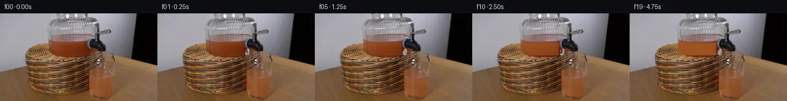

![首帧]()

Round 00
2026-11-05T17:12:37.327693+00:00像素候选变化代码 +348/−0inspection 更新
pixels 80eef93df399f6db · code aeb9cbadafda894c
查看本轮 generate.py 真实 diff
--- previous/generate.py +++ current/generate.py @@ -0,0 +1,348 @@ +#!/usr/bin/env python3 +"""PixelWorld-Text animation: Grapefruit juice dispenser pours into water glass. + +Method: Local Python pixel operations (numpy/PIL). +- Frame 00 = first_frame.png (verbatim copy) +- Frames 01–19: animated juice stream with wobble, progressive color mixing + in the glass from brownish-clear water to pinkish-orange grapefruit juice, + surface ripples, and slight liquid-level rise. +""" + +import numpy as np +from PIL import Image, ImageFilter +from pathlib import Path +import sys + +# ── path setup ────────────────────────────────────────────────────────── +CASE_DIR = Path(__file__).resolve().parent +sys.path.insert(0, str(CASE_DIR)) +from artifact_io import save + + +# ══════════════════════════════════════════════════════════════════════════ +# 1. Load frame 0 +# ══════════════════════════════════════════════════════════════════════════ +img = Image.open(CASE_DIR / "first_frame.png") +arr0 = np.array(img).astype(np.float32) # (144, 256, 3) +H, W = arr0.shape[:2] +frames = [arr0.copy().astype(np.uint8)] # list of uint8 frames + + +# ══════════════════════════════════════════════════════════════════════════ +# 2. Scene-defining masks (coordinates from OBSERVATION.md) +# ══════════════════════════════════════════════════════════════════════════ + +# --- glass liquid region (where water/juice sits) --- +# We use a soft mask: 1.0 inside, fading at edges. +liquid_y0, liquid_y1 = 48, 69 # rows (inclusive-exclusive) +liquid_x0, liquid_x1 = 78, 141 # cols + +# --- juice-stream region (thin column from nozzle to surface) --- +stream_y0, stream_y1 = 56, 69 +stream_x0, stream_x1 = 143, 150 # narrow band around col 145-146 + +# --- impact zone (where stream hits liquid surface) --- +impact_y0, impact_y1 = 59, 65 +impact_x0, impact_x1 = 140, 152 + +# --- spigot nozzle tip --- +nozzle_y = 57 +nozzle_x_center = 154 + +# --- background wall mask --- +# Pixels that are clearly "wall": near RGB(170,169,178) and above row 46 +wall_mask = np.zeros((H, W), dtype=np.float32) +wall_y0, wall_y1 = 0, 46 +for y in range(wall_y0, wall_y1): + for x in range(0, W): + px = arr0[y, x] + if px[0] > 155 and px[1] > 150 and abs(px[0] - px[1]) < 30: + wall_mask[y, x] = 1.0 + +# --- glass liquid mask --- +# Inside the glass: pixels that are distinctly darker than wall and warm-toned +liquid_mask = np.zeros((H, W), dtype=np.float32) +for y in range(liquid_y0, liquid_y1): + for x in range(liquid_x0, liquid_x1): + px = arr0[y, x] + r, g, b = px[0], px[1], px[2] + # Liquid pixels: R > 90, R > B significantly, not very dark + if r > 90 and r > b + 15 and r < 200 and g < 180: + liquid_mask[y, x] = 1.0 + +# Feather the liquid mask edges slightly +from scipy.ndimage import gaussian_filter +liquid_mask = gaussian_filter(liquid_mask, sigma=0.8) +liquid_mask = np.clip(liquid_mask, 0, 1) + +# --- impact mask --- +impact_mask = np.zeros((H, W), dtype=np.float32) +for y in range(impact_y0, impact_y1): + for x in range(impact_x0, impact_x1): + impact_mask[y, x] = 1.0 +impact_mask = gaussian_filter(impact_mask, sigma=1.0) +impact_mask = np.clip(impact_mask, 0, 1) + +# --- stream mask --- +stream_mask = np.zeros((H, W), dtype=np.float32) … diff truncated; 261 more lines …